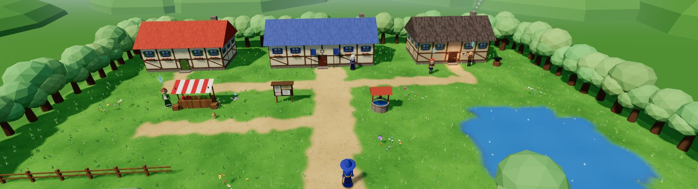
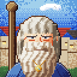

Die Chroniken von Eldoria · Beta-TestSeite 1 von 4

Fragebogen zum Spiel
Du hast Eldoria getestet. Jetzt brauchen wir deine Meinung!

Ratsältester Aldric
Hallo, Heldin! Hallo, Held! Was ist gut im Spiel? Was können wir besser machen?
Es gibt keine falschen Antworten. Sei ehrlich – auch Kritik hilft uns sehr!
So füllst du den Fragebogen aus:
Schreib mit einem dunklen Stift (blau oder schwarz) und schreib deutlich.
Mach ein Kreuz in das Kästchen. Bei manchen Fragen darfst du mehrere Kreuze machen.
Falsch angekreuzt? Mal das Kästchen ganz aus und kreuz neu an.
Schreib nur in die Kästen.
= ja, das meine ich = falsch, gilt nicht
A Über dich
A1
Deine Kennung aus dem Spiel (steht im Heldenpass, zum Beispiel IFK11-07)
–Klasse:
A2
Womit hast du gespielt? (mehrere Kreuze möglich)
Computer in der SchuleComputer / Laptop zu HauseHandyTablet
A3
Wie lange hast du schon gespielt? (alles zusammen)
weniger als 1 Stunde1–3 Stunden3–6 Stundenmehr als 6 Stunden
A4
Wo bist du jetzt im Spiel? (ein Kreuz)
DorfLytharaAureliaScriptoriaVocantiaSchattenzahnIch habe das Spiel geschafft!
Darauf achtest du beim Spielen besonders:
Ist ein Wort falsch geschrieben?
Wo kommst du nicht weiter?
Welche Aufgabe verstehst du nicht?
Was macht dir Spaß? Was ist langweilig?
Ist etwas zu schnell oder zu langsam?
Tipp: Mach dir beim Spielen kurze Notizen.
Danke für deine Hilfe!Bitte alle 4 Seiten ausfüllen.
Eldoria · Beta-TestKennung: –Seite 2 von 4
B Das Spiel
Meisterin LyraErzähl mir: Wie findest du unser Abenteuer?
B1
Wie gefällt dir das Spiel?
gar nichtnicht so gutokaygutsuper
B2
Was gefällt dir am besten?
B3
Was gefällt dir nicht?
B4
Möchtest du weiterspielen?
javielleichtnein
B5
Ist die Geschichte spannend?
ja, sehrein bisschenneinIch lese die Geschichte nicht.
C Die Aufgaben
C1
Die Aufgaben sind …
zu leichtgenau richtigzu schwer
C2
Verstehst du, was du bei einer Aufgabe machen sollst?
immermeistensmanchmalselten
C3
Welche Aufgaben machen dir Spaß? (mehrere Kreuze möglich)
HörenLesenSchreibenSprechenKämpfe gegen Wächter
C4
Welche Aufgaben sind schwer für dich? (mehrere Kreuze möglich)
HörenLesenSchreibenSprechenKämpfe gegen Wächter
C5
Die Texte im Spiel (Gespräche, Briefe, Aufgaben) sind …
zu langgut sozu kurz
Teil B und CWeiter auf Seite 3 ▸
Eldoria · Beta-TestKennung: –Seite 3 von 4
C Die Aufgaben (weiter)
C6
Hilft dir das Spiel für die DSD-Prüfung?
gar nichtwenigetwasvielsehr viel
C7
Welche Aufgabe war nicht klar? Wo war das? (Wenn alles klar war: leer lassen.)
D Die Steuerung
D1
Wie kommst du mit der Steuerung klar? (laufen, sprechen, Kamera drehen)
sehr schlechtschlechtokaygutsehr gut
D2
Weißt du immer, wohin du gehen sollst?
immermeistensmanchmalselten
D3
Was war bei der Steuerung schwierig?
E Grafik, Sound und Musik
Wie gefällt dir …
gar nicht
nicht so gut
okay
gut
super
E1die Grafik?die Welt, die Orte
E2die Figuren?Menschen, Wächter, Monster
E3der Sound?Geräusche, Stimmen
E4die Musik?
E5
Läuft das Spiel flüssig?
ja, immermanchmal ist es langsamoft ist es langsam
Teil C, D und EWeiter auf Seite 4 ▸
Eldoria · Beta-TestKennung: –Seite 4 von 4
F Fehler im Spiel
Schmied BorinIst etwas kaputt? Ich repariere alles! Aber ich muss wissen: Wo war es und was ist passiert?
Zum Beispiel: Ein Wort ist falsch geschrieben. Du kommst nicht weiter. Das Bild bleibt hängen.
F1
Hast du Fehler gefunden?
ja → bitte unten aufschreibennein
Wo war das? (Ort, Person, Aufgabe)
Was ist passiert?
F2
F3
F4
Tipp: Mach ein Foto vom Bildschirm und zeig es deiner Lehrkraft.
G Zum Schluss
G1
Deine Ideen: Was soll es noch im Spiel geben? Was können wir besser machen?